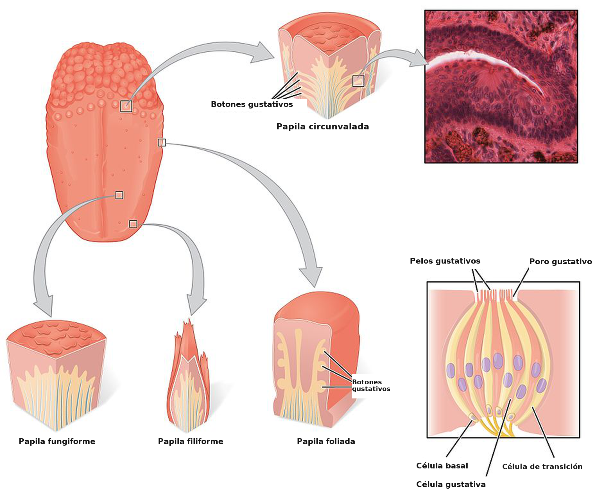
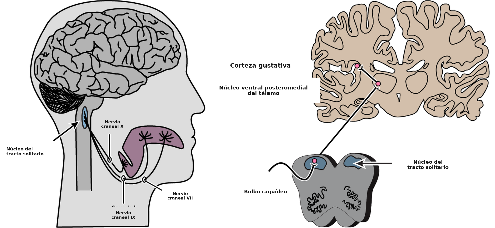
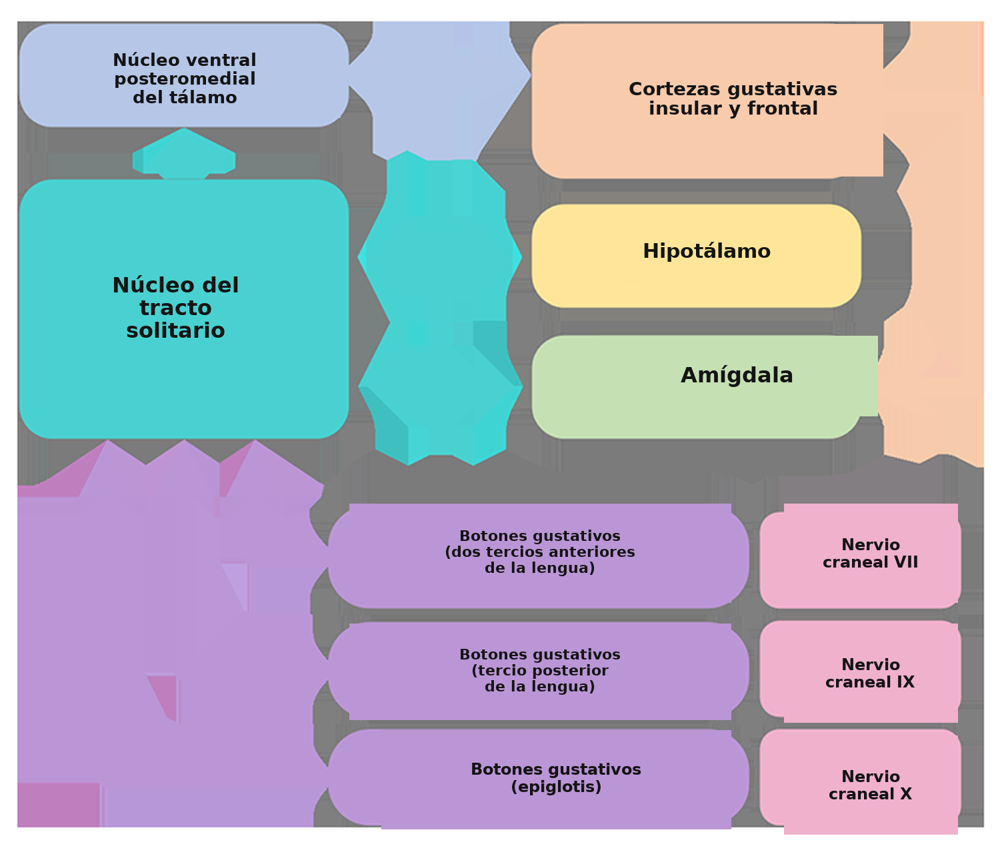
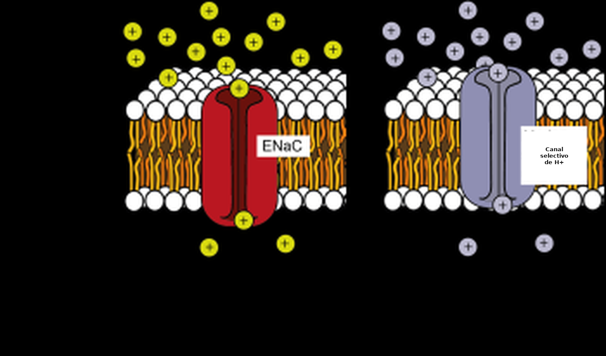
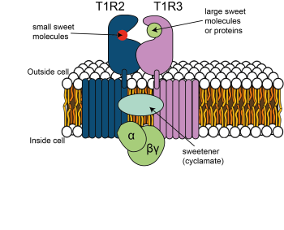
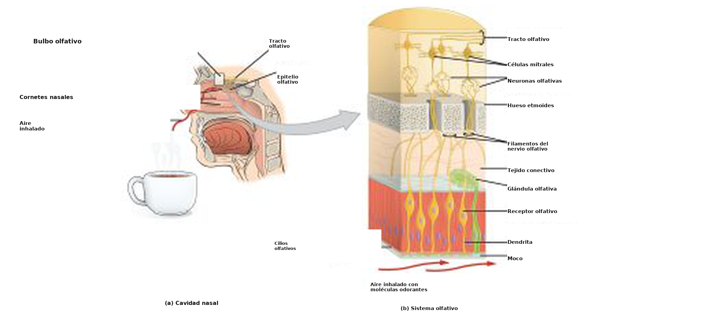
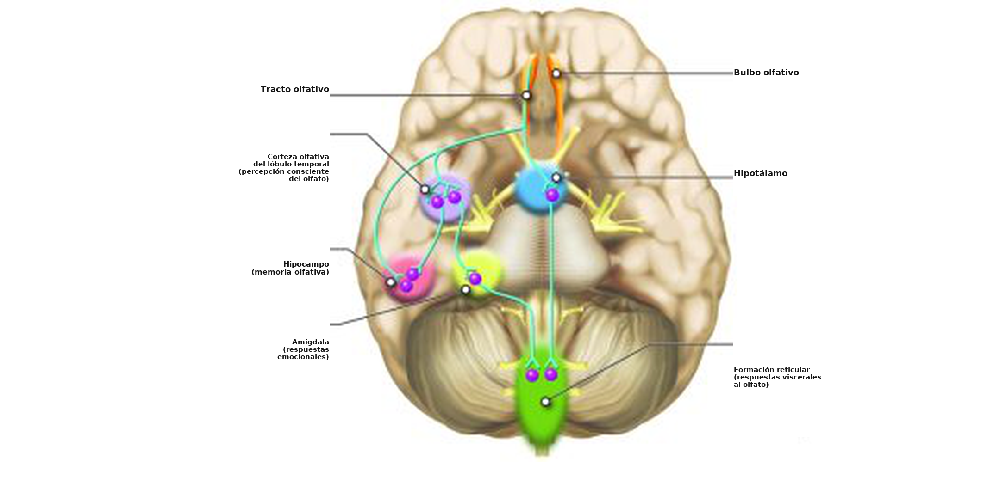
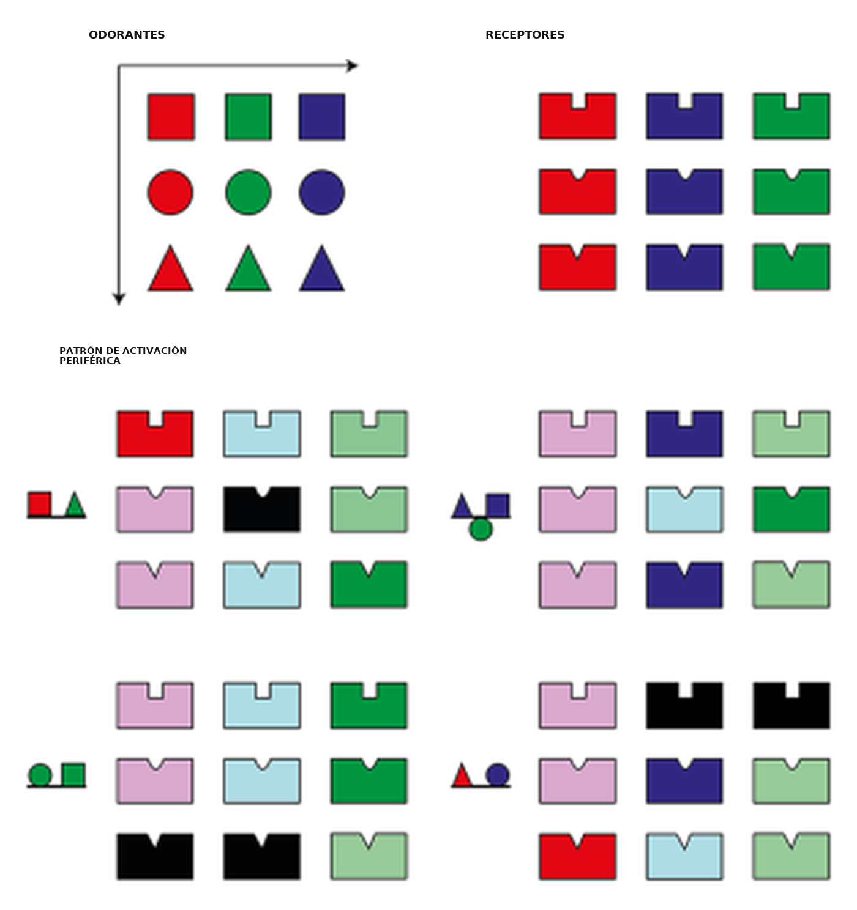

Sentidos químicos: el gusto y el olfato
Objetivos de aprendizaje
Al terminar este capítulo, vas a poder:
- identificar los estímulos y las estructuras sensitivas que participan en las sensaciones de gusto y de olfato;
- comprender los mecanismos de transducción que transforman la información química en potenciales de acción en cada sentido;
- describir las vías neurales de la percepción gustativa y de la olfativa.
Detectar compuestos químicos del entorno es el mecanismo sensitivo más antiguo de los organismos vivos. Muy temprano en la historia de la vida en la Tierra, los organismos unicelulares desarrollaron la detección química para distinguir el alimento de las toxinas, encontrar parejas y evitar el peligro. Hasta hoy, las conductas motivadas y emocionales de los animales humanos y no humanos dependen en gran medida de la detección de señales químicas del ambiente. En este capítulo vamos a repasar el conocimiento actual sobre los sentidos químicos en el ser humano, con especial atención a las señales que pueden detectar, a cómo se produce la transducción del código químico al código neural y a qué regiones del encéfalo participan en cada caso.
Las personas podemos detectar compuestos químicos del entorno mediante los sistemas olfativo (olores) y gustativo (gustos). Los sabores también son producto de la sensación química, pero resultan de la percepción combinada de olores y gustos. Por medio de estos sentidos especializados, la información química del entorno es captada por receptores quimiosensitivos, situados sobre todo en la boca y en la cavidad nasal. La información sobre la cualidad y la cantidad de las sustancias químicas se convierte al lenguaje del sistema nervioso, los potenciales de acción, mediante la transducción sensitiva, y después se transmite al sistema nervioso central. En el encéfalo, esa información se integra para producir la percepción olfativa y la gustativa, que terminan por influir en la toma de decisiones y en la selección y la ejecución de la conducta.
Aunque están algo menos estudiados que sentidos como la visión y la audición, los sentidos químicos pueden organizarse en dos sistemas: la gustación y la olfacción. El sentido gustativo, o sentido del gusto, capta compuestos químicos solubles, presentes en la boca. El sentido olfativo, o sentido del olfato, reacciona a moléculas transportadas por el aire que llegan a la cavidad nasal.
Estos sistemas sensitivos dan a los animales información ambiental clave para producir conductas adaptativas. Los olores sirven como señales de largo y de corto alcance, mientras que los gustos solo actúan a corto alcance, después de que ingerimos comida o bebida. Esa información puede ser decisiva para encontrar, seleccionar y consumir alimento, encontrar una posible pareja o regular las interacciones sociales. Aunque los sentidos químicos están formados por sistemas independientes, su acción coordinada puede producir capacidades sensitivas aún más complejas, como la detección de sabores, que involucra la activación de neuronas sensitivas comunes dentro de la corteza piriforme, la parte del encéfalo que procesa primero la información olfativa (Fu, Sugai, Yoshimura & Onoda, 2004).
El sentido del gusto
Panorama anatómico
El sentido del gusto empieza cuando las moléculas gustantes llegan a la boca por la ingestión.
Los gustantes son sustancias químicas hidrosolubles o liposolubles, presentes en la comida o en la bebida, que crean la sensación de gusto cuando las detectan las células receptoras del gusto (CRG; TRC en inglés) dentro de la boca. Nos resultan familiares los muchos bultitos del epitelio de la lengua, que se ven a simple vista. Esos bultos se llaman papilas, y en las paredes y las hendiduras de las papilas están los botones gustativos, que contienen las células receptoras del gusto. Hay miles de botones gustativos en cada papila, y se dividen en tres categorías, según su ubicación: las papilas foliadas, a los lados de la porción posterior de la lengua; las papilas circunvaladas, en el fondo de la lengua; y las papilas fungiformes, en la parte anterior de la lengua (Figura 4.46).

Cada botón gustativo contiene grupos de entre 50 y 150 células receptoras del gusto, y presenta una abertura superior llamada poro gustativo. Las CRG proyectan finas prolongaciones parecidas a pelos, o microvellosidades, desde los poros gustativos hacia la cavidad bucal, donde se encuentran con los gustantes.
En el ser humano hay tres tipos principales de células receptoras del gusto, según su función. Las células de tipo I cumplen sobre todo funciones de mantenimiento. Las células de tipo II son sensibles a los gustos dulce, amargo y umami. Las células de tipo III parecen mediar la percepción del gusto ácido. La detección de compuestos gustantes por las células receptoras lleva a la liberación de neurotransmisor (por lo general ATP) y a la generación de potenciales de acción en las neuronas de la base de esas células receptoras. Los axones de esas neuronas forman los nervios aferentes que transmiten la información al encéfalo por tres nervios craneales distintos: el VII, el IX y el X. Distintas zonas de papilas están inervadas por ramas diferentes de los nervios craneales VII, IX y X. Los dos tercios anteriores de la lengua, con las papilas fungiformes, reciben ramas del nervio craneal VII. El tercio posterior de la lengua está inervado por ramas del nervio IX, el glosofaríngeo. Las regiones posteriores del esófago y el paladar blando están inervadas por ramas del nervio craneal X.
Los nervios VII, IX y X proyectan al tronco encefálico, donde hacen sinapsis con la parte rostral del núcleo del tracto solitario (NTS), que retransmite la información al núcleo ventral posteromedial del tálamo. El tálamo proyecta a la corteza insular anterior y a una región llamada corteza gustativa primaria, o corteza insular del gusto. Las señales neurales de la corteza insular del gusto viajan a la corteza gustativa secundaria, dentro de la corteza orbitofrontal medial y lateral, y también proyectan a estructuras como la amígdala, el hipocampo, el estriado y el hipotálamo, donde esta información sensitiva puede afectar distintas etapas de la toma de decisiones y de la conducta resultante (Figura 4.48).


¿Sabías que…?
Los botones gustativos viven unas dos semanas, y por eso pueden volver a crecer incluso cuando se destruyen, por ejemplo cuando nos quemamos la lengua. En eso se parecen a las células de la piel, pero también comparten características con las neuronas. Por ejemplo, tienen membranas excitables y liberan neurotransmisores.
Transducción sensitiva
¿Cómo se transforma la información química contenida en la cualidad y la cantidad de gustantes determinados en señales neurales que el encéfalo puede interpretar?
Los gustantes entran en las papilas por el poro gustativo e inducen mecanismos distintos en las células receptoras del gusto. Cada célula receptora tiene mecanismos propios para transducir la información química en actividad neural. Los gustantes se dividen en salado, ácido, dulce, amargo y umami, palabra japonesa que significa «lo delicioso». El gusto umami lo produce el glutamato monosódico y, probablemente, otros aminoácidos relacionados.

Como ya se comentó, los componentes de las sustancias saladas son clave para la supervivencia de varios animales. Los iones Na+ contenidos en la más salada de las sales, el cloruro de sodio (NaCl), son clave para mantener el funcionamiento muscular y neuronal. Un subgrupo de células receptoras del gusto de tipo II está especializado en la detección de la sal. Esas células expresan receptores que detectan las sustancias saladas que contienen Na+ y reaccionan a ellas. Receptores similares de tipo II expresan canales que dejan entrar en la célula otros cationes libres, como el H+ liberado por los compuestos ácidos (Figura 4.49a). Las células receptoras que expresan canales iónicos para el Na+ o el H+ permiten que esos cationes entren al espacio intracelular, despolarizan la membrana y así llevan a la liberación de neurotransmisor, por lo general ATP, y a la descarga de potenciales de acción en las neuronas que forman los nervios craneales. Una investigación reciente identificó el canal iónico responsable de la detección de NaCl en el ratón. La eliminación del gen que produce el canal de sodio epitelial (ENaC) en el ratón afectó de manera específica a un subgrupo de células receptoras del gusto de tipo II. Los ratones sin ENaC perdieron por completo la atracción por la sal y las respuestas al gusto del sodio, en comparación con los animales de control (Chandrashekar et al., 2010). Esa fue la primera evidencia de que la sal la detecta una proteína específica, expresada en un tipo distintivo de CRG. Otras categorías de moléculas gustantes, en concreto las que se perciben como dulces, amargas y umami, activan receptores acoplados a proteína G (GPCR, Figura 4.49b).

Como ya se comentó en capítulos anteriores, los GPCR son receptores transmembrana asociados, del lado citoplasmático, con proteínas G. Usan un mecanismo de «llave y cerradura» para transducir la información química en actividad neural. Cuando un GPCR reconoce una molécula gustante determinada, se activa la proteína G asociada y se disocia en las subunidades α y βγ. Estas pueden activar otras cascadas de señalización intracelular, que llevan a la despolarización o a un aumento de la concentración intracelular de calcio y, en última instancia, a la liberación de neurotransmisores, por lo general ATP.
En los mamíferos, los receptores de lo dulce y del umami son GPCR heteroméricos llamados T1R2+3 y T1R1+3, respectivamente. Esos receptores son una combinación de proteínas de las familias T1R1, T1R2 o T1R3, y pueden detectar compuestos de gusto dulce y umami. Igual que los ratones sin ENaC, los animales sin T1R1 no detectan los compuestos umami, mientras que los animales sin T1R2 no detectan los gustos dulces (Zhao et al., 2003).
Ejercicio
Los gatos domésticos, los leones y los tigres no tienen los genes que codifican los receptores T1R2. Eso significa que no pueden percibir el gusto dulce ni experimentar la dulzura. ¿Cómo pensás que este hecho influye en su dieta estrictamente carnívora?
Topografía y distribución de los receptores del gusto
Históricamente, la ciencia tuvo una visión rígida de la topografía, o distribución, de los receptores del gusto, pero ese concepto se está abandonando poco a poco. Hoy reconocemos que las zonas del gusto en la superficie de la lengua no son absolutas, y que todas las zonas pueden detectar todos los gustos, aunque con capacidades de detección distintas. Lo que varía en la superficie de la lengua son los umbrales de sensibilidad gustativa, y no la distribución de los receptores: todas las áreas muestran mayor o menor sensibilidad a todos los gustantes. Por ejemplo, los receptores con mayor sensibilidad a los gustantes amargos tienden a distribuirse en la parte posterior de la lengua. Los gustos salado y dulce se detectan con más facilidad en la punta de la lengua y viajan sobre todo por el nervio craneal VII. Las sensaciones amargas se retransmiten principalmente por el nervio craneal IX, que inerva el tercio posterior de la lengua.
Codificación de la información en el sistema gustativo
En general hay una relación proporcional entre la concentración del gustante y la tasa de descarga de los axones de primer orden que entran al tronco encefálico, de modo que la codificación de la intensidad del gusto se basa, al menos en parte, en la frecuencia de los potenciales de acción.
La codificación de la información gustativa también se basa en la distribución topográfica de la sensibilidad de las células receptoras del gusto. Esa distribución es el fundamento de la codificación por línea marcada (labelled-line coding; Squire et al., 2012): la información sobre la naturaleza del gusto la aporta cuál célula se activó. Dicho de otro modo, un axón que recibe información de un receptor de lo dulce está etiquetado como el que codifica la dulzura. Por lo tanto, cada vez que ese axón descarga un potencial de acción y lleva esa señal al tronco encefálico, la entrada recibida se interpreta como dulzura. Esto se parece a los principios de codificación del sistema somatosensitivo, en el que la identidad de la neurona activada, y no la tasa de descarga, indica la cualidad de la señal que transporta (por ejemplo, la activación de una neurona que inerva el dedo se percibe como proveniente de esa zona, y el tipo de neurona activada influye en qué sensación se percibe).
En el caso de la gustación, podemos reconocer la actividad de los axones como señales de la presencia de gustantes ácidos, amargos, salados, dulces y umami. Otra evidencia, sin embargo, sugiere que el patrón de actividad entre neuronas que responden de preferencia a características gustativas distintas se usa para codificar gustos específicos (codificación por patrones o de conjunto; pattern or ensemble coding).
Dentro del sistema nervioso central, la identidad de los gustantes se conserva en los relevos desde el núcleo del tracto solitario hacia el complejo ventral posteromedial del tálamo, la corteza gustativa o ínsula (Doty, 2015). Durante un tiempo se supuso que la ínsula representaría las categorías del gusto en un «mapa gustotópico» (gustotopic map), pero la evidencia empírica fue esquiva. Estudios recientes, que usan el trazado genético de las células receptoras del gusto hasta la corteza gustativa, sugieren que hay patrones espaciales distintivos dentro de la corteza, pero ninguna región está asignada a un solo gustante (Accolla et al., 2007). Por último, la información de los gustantes llega a la corteza orbitofrontal, donde se integra con información sensitiva de distintas modalidades. Eso sugiere que esta área integra los gustos con otra información para crear experiencias perceptivas más complejas.
¿Sabías que…?
Hay alguna evidencia de codificación por línea marcada en todos los sistemas sensitivos.
El concepto se refiere a la idea de que la línea, o la vía, que va del receptor periférico al encéfalo está marcada según la presencia de receptores particulares que llevan a cabo la transducción sensitiva.
El sentido del olfato
Panorama anatómico
En el ser humano, la olfacción, o el sentido del olfato, detecta moléculas transportadas por el aire, u odorantes, que entran en la cavidad nasal. Los odorantes interactúan con las neuronas sensitivas olfativas (NSO; OSN en inglés) situadas en el epitelio olfativo, que cubre la cara dorsal y medial del conducto nasal (Figura 4.50).

Las NSO se encargan de transducir la información química de los odorantes, y de codificar la información sobre la cualidad y la cantidad de los olores, en potenciales de acción que el encéfalo puede interpretar. Las células receptoras olfativas extienden sus axones a través del hueso etmoides, también llamado lámina cribosa. Esos axones hacen contacto sináptico con las células mitrales dentro de estructuras llamadas glomérulos, en el bulbo olfativo. Los axones de las células mitrales se agrupan y se unen al primer nervio craneal, y así llevan la información olfativa a varias regiones del encéfalo.
La información sobre la presencia y la cantidad de olores sale del bulbo olfativo por el tracto olfativo lateral. En la vía olfativa, el tracto olfativo lateral se conecta con las partes inferior y posterior del lóbulo frontal, cerca de la unión del lóbulo frontal y el lóbulo temporal, que constituye el comienzo de la corteza olfativa (Figura 4.51).

A diferencia de otras cortezas sensitivas primarias, la corteza olfativa primaria comprende varias estructuras distintas. Incluye estructuras subcorticales, como el tubérculo olfativo, en la parte ventral del estriado, y parte de la amígdala, además de regiones corticales de la parte medial del lóbulo temporal (corteza entorrinal) y de su unión con el lóbulo frontal (corteza piriforme). Las divisiones de la corteza olfativa están interconectadas y, aunque se pone más énfasis en la corteza piriforme, toda la red extendida de estas regiones constituye la corteza olfativa. Además, estas divisiones de la corteza olfativa también proyectan a otras áreas del encéfalo, entre ellas el tálamo, el hipotálamo, el hipocampo y, de manera especialmente importante, las partes orbitaria y frontal de la corteza prefrontal.
A diferencia de otros sistemas sensitivos, en la olfacción no hay un relevo talámico entre las estructuras sensitivas periféricas, es decir el bulbo olfativo, y la corteza (Breslin, 2019). En el sistema olfativo, la conexión con el tálamo está más adelante en la vía, después de la corteza cerebral.
Transducción sensitiva y representación de los olores
En el epitelio olfativo hay varios tipos de células. Las células de sostén dan apoyo metabólico y físico al epitelio, pero la detección y la transducción de los olores dependen de células maduras llamadas neuronas sensitivas olfativas (NSO). La cavidad nasal es un entorno difícil para las células vivas, por los cambios importantes de condiciones ambientales como la humedad y la temperatura, que dan a las NSO una vida corta. Divisiones mitóticas constantes y la maduración de las células basales reponen el conjunto de NSO y mantienen su número. Además de las células sensitivas y de sostén, el epitelio está compuesto por células glandulares que producen y secretan el moco espeso que cubre y protege sus estructuras celulares más expuestas (Figura 4.50).
Las moléculas odorantes que acceden a la cavidad nasal y se difunden por el moco interactúan con los cilios olfativos, prolongaciones parecidas a pelos que se proyectan desde el extremo de la dendrita de la NSO. En la membrana de los cilios olfativos están incrustadas las proteínas receptoras que se unen a los odorantes. El ser humano tiene alrededor de mil genes distintos de receptores de olor (RO; OR en inglés), pero puede percibir más de un billón (1012) de olores distintos (Bushdid et al., 2014). En una disposición característica de «uno a uno a uno», cada NSO expresa solo un tipo de gen de RO, y todas las NSO que expresan la misma proteína RO proyectan sus axones al mismo glomérulo dentro del bulbo olfativo (Figura 4.50). Por lo tanto, la activación de los glomérulos recapitula la activación de los RO y reproduce un código combinatorio de actividad glomerular único para cada olor.
La explicación actual de cómo se reconocen los olores en el nivel neural es la teoría del patrón de formas (shape-pattern theory), que propone que cada aroma activa conjuntos únicos de receptores olfativos en el epitelio. Los atributos moleculares de los olores determinan a cuántos RO pueden unirse. Así, un olor activa una serie de RO con mayor o menor intensidad, y ese patrón de activación de RO es lo que el encéfalo reconoce como rótulo de esa molécula de olor en particular. Olores distintos disparan patrones distintos de activación de RO, pero los olores emparentados (es decir, los que comparten algunas propiedades moleculares, como los compuestos de la familia de los alcoholes) disparan patrones más parecidos, porque pueden ser reconocidos por combinaciones de RO que se superponen y difieren solo un poco. Hay que notar que los aromas suelen ser una combinación de más de una molécula de olor, y que la percepción del aroma se asocia con un patrón aún más complejo de activación de RO y de representación en los glomérulos. Una representación gráfica de este mecanismo se presenta en la Figura 4.52.

Los olores se representan como formas geométricas, y los RO como una estructura de encaje por la forma. Los olores encajan mejor o peor en estructuras de encaje determinadas, y un mejor ajuste se asocia con una mayor activación de las NSO. Combinaciones específicas de olores (aromas) producen patrones distintivos de activación de RO, que las áreas encefálicas sensitivas olfativas identifican de manera unívoca.
Cuando los odorantes se unen al RO de una NSO dada, ocurre una serie de acontecimientos intracelulares que transducen la información química en potenciales de acción. Los RO, como la rodopsina, los receptores metabotrópicos de glutamato y algunos receptores del gusto, son GPCR. Cuando los olores se unen a su RO específico, se activa la proteína G asociada, las subunidades α y βγ se disocian y se activa una vía de segundo mensajero. En este caso, esa vía es la activación de la adenilil ciclasa y la producción de monofosfato de adenosina cíclico 3′,5′ (AMPc; cAMP en inglés) a partir de ATP. Ese aumento del AMPc intracelular abre canales selectivos de cationes, deja entrar calcio y sodio a la NSO, la despolariza y hace que descargue potenciales de acción si la señal es lo bastante intensa. Esos potenciales de acción se transmiten a lo largo de los axones de las NSO, salen del epitelio nasal por el nervio olfativo (nervio craneal I). En los glomérulos, las NSO hacen contacto sináptico y activan las células mitrales, que llevan la información quimiosensitiva al encéfalo (Schild & Restrepo, 1998). A diferencia de otros sentidos, el sistema olfativo carece de un mapa topográfico del entorno sensitivo en la corteza olfativa. En cambio, los olores se asocian con patrones únicos de activación de regiones primarias dentro de la corteza olfativa, que corresponden a los patrones de actividad asociados en las NSO y en los glomérulos.
La expresión de los RO varía de una persona a otra. En el ser humano, solo un tercio de todos los genes de RO presentes en el genoma se expresa como proteínas receptoras, pero ese número es muy variable entre individuos. La experiencia olfativa depende de qué genes de RO se expresan y de cuántas copias de un receptor específico tiene cada persona. Dos personas que expresan 358 y 388 RO distintos, respectivamente, van a ser las dos «normales», pero la experiencia sensitiva asociada con una molécula de olor dada puede ser diferente para cada una. Por ejemplo, en un estudio reciente, Kurz examinó la percepción del olor y del gusto del cilantro en distintas personas voluntarias. Encontraron que hay «amantes» y «detractores» del cilantro en partes aproximadamente iguales. Mientras que quienes lo aman se sienten atraídos por su olor «fantásticamente sabroso», quienes lo detestan huelen jabón. Esa diferencia está, al parecer, ligada a la capacidad de detectar algunos de los compuestos presentes en el cilantro, los aldehídos insaturados, que hacen que quienes lo detestan huelan algo parecido al jabón. Quienes lo aman, por el contrario, son insensibles a los aldehídos insaturados, así que no detectan olor a jabón, y en esas personas solo quedan por detectar las características más agradables del cilantro.
Ideas clave
- El gusto y el olfato son dos sentidos especializados en detectar compuestos químicos que llegan a la boca o a la nariz, respectivamente.
- La experiencia sensitiva del gusto resulta de la detección en un número pequeño de dimensiones, sobre todo salado, ácido, dulce, amargo y umami. Cada dimensión sensitiva está indicada por un tipo específico de receptor del gusto, distribuido a lo largo de la superficie de la lengua.
- La detección de los olores se apoya en un gran número de neuronas receptoras de olor, que se activan de manera combinatoria y dan lugar a patrones de activación específicos de cada molécula dentro de la corteza olfativa.
- La sensación olfativa «normal» es muy variable entre personas y depende de la cualidad y la cantidad de receptores de olor expresados.
Referencias
Accolla, R., Bathellier, B., Petersen, C. C. H., & Carleton, A. (2007). Differential spatial representation of taste modalities in the rat gustatory cortex. The Journal of Neuroscience, 27(6), 1396-1404. https://doi.org/10.1523/JNEUROSCI.5188-06.2007
Andreou, A. P., & Edvinsson, L. (2020). Trigeminal mechanisms of nociception. In G. Lambru & M. Lanteri-Minet (Eds.), Neuromodulation in headache and facial pain management: Principles, rationale and clinical data (pp. 3–31). Springer International Publishing. https://doi.org/10.1007/978-3-030-14121-9_1
Bereiter, D .A., Hargreaves, K. M., & Hu, J. W. (2008). Trigeminal mechanisms of nociception: Peripheral and brainstem organization. In C. Bushnell & A. I. Basbaum (Eds.), The senses: A comprehensive reference: Vol. 5. Pain (pp. 435–60). Academic Press. https://doi.org/10.1016/B978-012370880-9.00174-2
Breslin, P. A. S. (2019). Chemical senses in feeding, belonging, and surviving: Or, are you going to eat that? Cambridge University Press. https://doi.org/10.1017/9781108644372
Bushdid, C., Magnasco, M. O., Vosshall, L. B., & Keller, A. (2014). Humans can discriminate more than 1 trillion olfactory stimuli. Science, 343(6177), 1370–1372. https://doi.org/10.1126/science.1249168
Chandrashekar, J., Kuhn, C., Oka, Y., Yarmolinsky, D. A., Hummler, E., Ryba, N. J. P., & Zuker, C. S. (2010). The cells and peripheral representation of sodium taste in mice. Nature 464(7286), 297–301. https://doi.org/10.1038/nature08783
Doty, R. L. (2015). Handbook of olfaction and gustation. John Wiley & Sons. https://doi.org/10.1002/9781118971758
Fu, W., Sugai, T., Yoshimura, H., & Onoda, N. (2004). Convergence of olfactory and gustatory connections onto the endopiriform nucleus in the rat. Neuroscience, 126(4), 1033-1041. https://doi.org/10.1016/j.neuroscience.2004.03.041
Hawkes, C. H., & Doty, R. L. (2009). The neurology of olfaction. Cambridge University Press. https://doi.org/10.1017/CBO9780511575754
Hummel, T., Iannilli, E., Frasnelli, J., Boyle, J., & Gerber, J. (2009). Central processing of trigeminal activation in humans. Annals of the New York Academy of Sciences, 1170(1), 190-195. https://doi.org/10.1111/j.1749-6632.2009.03910.x
Papotto, N., Reithofer, S., Baumert, K., Carr, R., Möhrlen, F., & Frings, S. (2021). Olfactory timulation Inhibits nociceptive signal processing at the input stage of the central trigeminal system. Neuroscience, 479, 35-47. https://doi.org/10.1016/j.neuroscience.2021.10.018
Price, S., & Daly, D. T. (2021). Neuroanatomy, trigeminal nucleus. StatPearls. https://www.statpearls.com/point-of-care/30606
Schild, D., & Restrepo, D. (1998) Transduction mechanisms in vertebrate olfactory receptor cells. Physiological Reviews 78(2), 429–66. https://doi.org/10.1152/physrev.1998.78.2.429
Sell, C. S. (2014). Chemistry and the sense of smell. John Wiley & Sons. https://doi.org/10.1002/9781118522981
Squire, L., Berg, D., Bloom, F. E., Du Lac, S., Ghosh, A., & Spitzer, N. C. (Eds.). (2012). Fundamental neuroscience (4th ed.). Academic Press. https://doi.org/10.1016/C2010-0-65035-8
Viana, F. (2011). Chemosensory properties of the trigeminal system. ACS Chemical Neuroscience, 2(1), 38-50. https://doi.org/10.1021/cn100102c
Zhao, G. Q., Zhang, Y., Hoon, M. A., Chandrashekar, J., Erlenbach, I., Ryba, N. J., & Zuker, C. S. (2003). The receptors for mammalian sweet and umami taste. Cell 115(3), 255–266. https://doi.org/10.1016/s0092-8674(03)00844-4